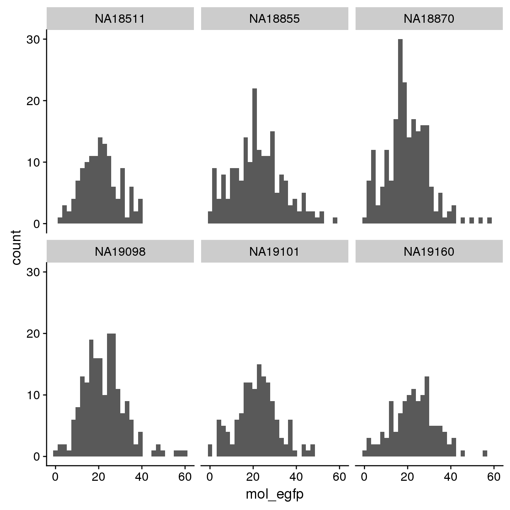
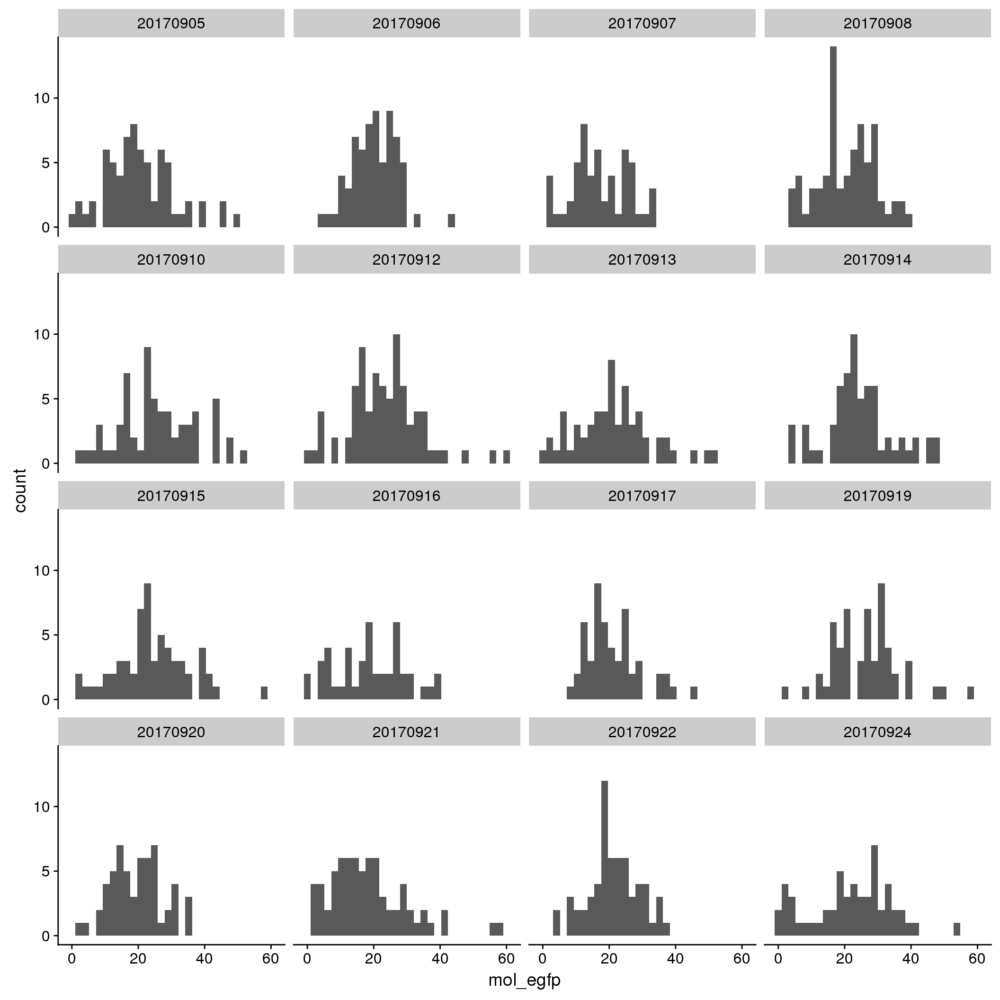
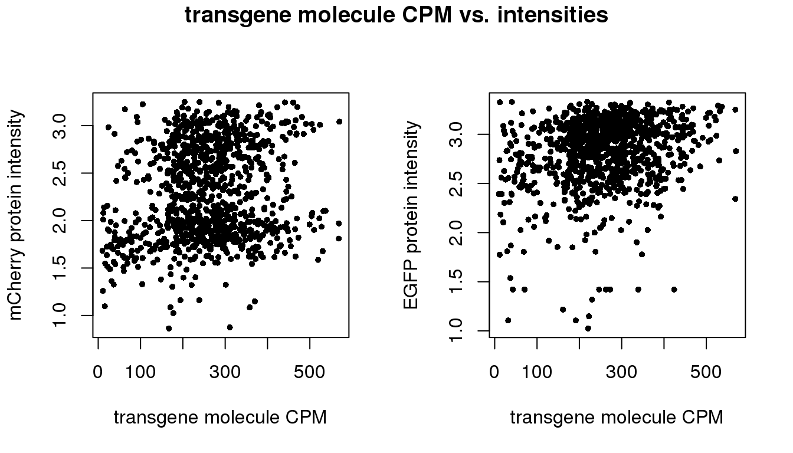
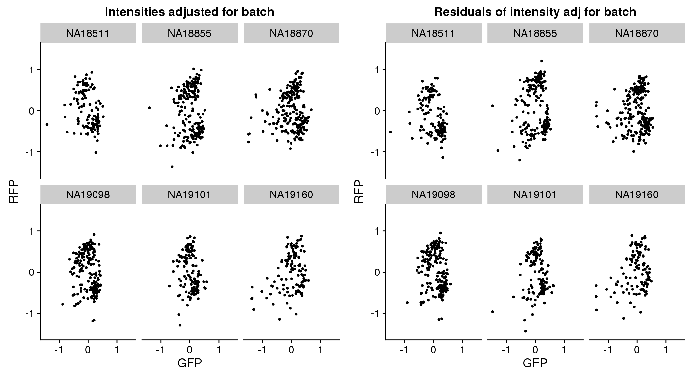

Investigate intensities against transgenes
Joyce Hsiao
Last updated: 2018-02-27
Code version: 056ff12
Introduction/Summary
There are more reads mapped to EGFP than to mCherry. The regions in the transgenes statring from 5’ end: promoter region -> EGFP -> 20 bp linker -> mCherry. We don’t yet have an explanation on the low number of reads mapped to mCherry… We decided to use EGFP to determine if the transgene is silenced at all.
Consistent with image intensity data, there are more variation between batches of C1 plates than between individuals. Fortunatley, given our balanced design, technical variation between batches are spread out across individuals. The main concern here would be the inflated within individual variation due to differences between the C1 plates.
Considering the relationship between intensity and transgene molecule count: samples with no EGFP molecules also have lower than average (z-score < 0) GFP and RFP intensity.
Packages
library(ggplot2)
library(cellcycleR)
library(data.table)
library(dplyr)
library(cowplot)
library(wesanderson)
library(RColorBrewer)
library(Biobase)Data
Import sequencing data.
# fname <- Sys.glob("../data/eset/*.rds")
# eset <- Reduce(combine, Map(readRDS, fname))
#
# pdata <- pData(eset)
# pdata$unique <- paste(pdata$image_individual, sprintf("%05d", pdata$image_label), sep="_")
df <- readRDS(file="../data/eset-filtered.rds")
pdata <- pData(df)
fdata <- fData(df)
# import corrected intensities
pdata.adj <- readRDS("../output/images-normalize-anova.Rmd/pdata.adj.rds")\(~\)
Transgene count
Results: there are more reads mapped to EGFP than to mCherry. The regions in the transgenes statring from 5’ end: promoter region -> EGFP -> 20 bp linker -> mCherry. We don’t yet have an explanation on the low number of reads mapped to mCherry… We decided to use EGFP to determine if the transgene is silenced at all.
summary(pdata.adj$mol_egfp) Min. 1st Qu. Median Mean 3rd Qu. Max.
1.00 15.00 21.00 21.59 27.00 61.00 summary(pdata.adj$mol_mcherry) Min. 1st Qu. Median Mean 3rd Qu. Max.
0.0000 0.0000 1.0000 0.9515 1.0000 6.0000 EGFP
By individual

By C1 plate

By individual and C1 plate

mCherry
By individual

By C1 plate

By individual and C1 plate

Correlation between transgene count and intensities
par(mfrow=c(2,2))
plot(y=pdata.adj$mol_mcherry,
x=pdata.adj$mol_egfp,
xlab = "EFGP (green)", ylab = "mCherry (Red)",
main = "Transgene molecule count",
pch = 16, cex = .7)
plot(y=pdata.adj$gfp.median.log10sum,
x=pdata.adj$mol_egfp,
xlab = "EFGP (green)", ylab = "Green intensity",
main = "Green intensity vs. molecule count",
pch = 16, cex = .7)
plot(y=pdata.adj$rfp.median.log10sum,
x=pdata.adj$mol_mcherry,
xlab = "mCherry (red)", ylab = "Red intensity",
main = "Red intensity vs. molecule count",
pch = 16, cex = .7)Correlation between total transgene count and intensities
trans_total <- rowSums(cbind(pdata.adj$mol_mcherry,pdata.adj$mol_egfp))
par(mfrow=c(1,2))
plot(x=trans_total,
y=pdata.adj$gfp.median.log10sum,
xlab = "transgene molecule count",
ylab = "EGFP protein intensity",
pch = 16, cex = .7)
plot(x=trans_total,
y=pdata.adj$rfp.median.log10sum,
xlab = "transgene molecule count",
ylab = "mCherry protein intensity",
pch = 16, cex = .7)
title(main = "transgene molecule count vs. intensities",
outer = TRUE, line = -1)
par(mfrow=c(6,2), mar = c(3,2,2,1))
for (i in 1:length(unique(pdata.adj$chip_id))) {
ii_id <- which(pdata.adj$chip_id == unique(pdata.adj$chip_id)[i])
plot(x=trans_total[ii_id],
y=pdata.adj$gfp.median.log10sum[ii_id],
xlab = "transgene molecule count",
ylab = "EGFP protein intensity",
# main = "Transgene molecule count",
pch = 16, cex = .7, main = unique(pdata.adj$chip_id)[i])
plot(x=trans_total[ii_id],
y=pdata.adj$rfp.median.log10sum[ii_id],
xlab = "transgene molecule count",
ylab = "mCherry protein intensity",
# main = "Transgene molecule count",
pch = 16, cex = .7, main = unique(pdata.adj$chip_id)[i])
}
Session information
R version 3.4.1 (2017-06-30)
Platform: x86_64-redhat-linux-gnu (64-bit)
Running under: Scientific Linux 7.2 (Nitrogen)
Matrix products: default
BLAS/LAPACK: /usr/lib64/R/lib/libRblas.so
locale:
[1] LC_CTYPE=en_US.UTF-8 LC_NUMERIC=C
[3] LC_TIME=en_US.UTF-8 LC_COLLATE=en_US.UTF-8
[5] LC_MONETARY=en_US.UTF-8 LC_MESSAGES=en_US.UTF-8
[7] LC_PAPER=en_US.UTF-8 LC_NAME=C
[9] LC_ADDRESS=C LC_TELEPHONE=C
[11] LC_MEASUREMENT=en_US.UTF-8 LC_IDENTIFICATION=C
attached base packages:
[1] parallel stats graphics grDevices utils datasets methods
[8] base
other attached packages:
[1] Biobase_2.38.0 BiocGenerics_0.24.0 RColorBrewer_1.1-2
[4] wesanderson_0.3.4 cowplot_0.9.2 dplyr_0.7.4
[7] data.table_1.10.4-3 cellcycleR_0.1.6 zoo_1.8-1
[10] binhf_1.0-1 adlift_1.3-3 EbayesThresh_1.4-12
[13] wavethresh_4.6.8 MASS_7.3-47 ggplot2_2.2.1
loaded via a namespace (and not attached):
[1] Rcpp_0.12.15 pillar_1.1.0 compiler_3.4.1 git2r_0.21.0
[5] plyr_1.8.4 bindr_0.1 tools_3.4.1 digest_0.6.15
[9] evaluate_0.10.1 tibble_1.4.2 gtable_0.2.0 lattice_0.20-35
[13] pkgconfig_2.0.1 rlang_0.2.0 yaml_2.1.16 bindrcpp_0.2
[17] stringr_1.3.0 knitr_1.20 rprojroot_1.3-2 grid_3.4.1
[21] glue_1.2.0 R6_2.2.2 rmarkdown_1.8 reshape2_1.4.3
[25] magrittr_1.5 backports_1.1.2 scales_0.5.0 htmltools_0.3.6
[29] assertthat_0.2.0 colorspace_1.3-2 labeling_0.3 stringi_1.1.6
[33] lazyeval_0.2.1 munsell_0.4.3 This R Markdown site was created with workflowr